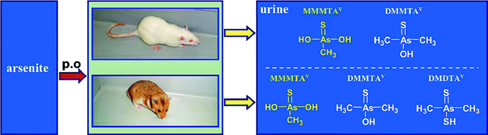

Arsenic and young hamsters.
Don't try this at home.
I came across a paper in Chemical Research in Toxicology, 2007, 20 (4), pp 616–624, entitled ‘Arsenic Metabolism and Thioarsenicals in Hamsters and Rats’. Scientists gave groups of hamsters and rats a single oral dose of arsenite (iAsIII) at 5.0 mg As/kg body weight and then determined where the arsenic dose accumulated and how quickly it was processed.
More than 75% of the dose accumulated in rat red blood cells in the form of dimethylarsinous acid (DMA), whereas less than 0.8% of the dose accumulated in hamster red blood cells, mostly in the form of monomethylarsonous acid (MMA).
More than 63% of the dose was recovered in hamster urine within one week (7.8-fold higher than that in rat urine).
The quantity of arsenic distributed in the liver and kidneys was significantly higher in hamsters than in rats, and arsenic in livers stayed much longer in hamsters than in rats.
Now, I don't know about you, but I think that’s just brutal.
And I’m getting slightly twitchy because I have heard one of my humans talking about chemistry. He’d better not try anything…or at least he should go and find a rat if he’s keen on experimenting.

19-Apr-2017 | Milku